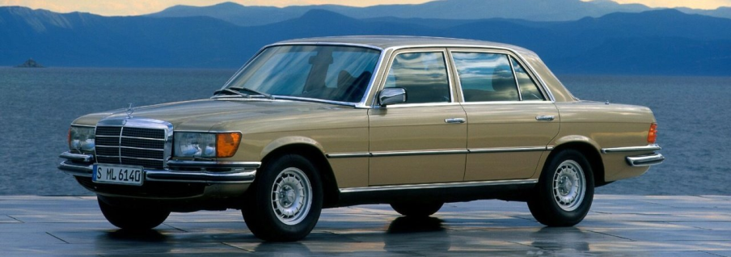

1972.-1980.
Prva generacija, model W116, se proizvodio od 1972. - 1980. godine.
Prva generacija je dolazila sa 2.8, 3.5, 4.5 i 6.8 benzinskim motorima, a dizel je u ponudi imao samo 3.0TD motor.
Mercedes S klasa 1972. godište
1980.-1991.
Druga generacija, model W126, se proizvodio od 1979. - 1991. godine.
Druga generacija dolazila je sa 2.6, 2.8, 3.0, 3.5, 3.8, 4.2, 5.0, 5.6 benzinskim motorima, no dizel modeli su nudili samo 3.0TD motor sa 5 cilindra, 3.0TD motor sa 6 cilindra te 3.5TD motore.
Mercedes S klasa 1988. godište
1991.-1998,
Treća generacija, model W140, se proizvodio od 1991. - 1998. godine.
Treća generacija dolazila je sa 2.8, 3.2, 4.2, 5.0, 6.0 benzinskim motorima i sa 3.0TD te 3.5TD dizelskim motorima.
Mercedes S klasa 1995. godište
1998.-2005.
Četvrta generacija, model W220, se proizvodio od 1998. - 2005. godine.
Četvrta generacija dolazila je sa 2.8, 3.2, 3.7, 4.3, 5.0, 5.4, 5.8, 5.5, 6.3, 6.0 benzinskim motorima te sa 3.2 i 4.0 dizelskim motorima.
Mercedes S klasa 2003. godište
2005.-2013.
Peta generacija, model W221, se proizvodio se od 2005. - 2013 godine.
peta generacija je doalzila sa 3.5, 4.7, 5.5 i 6.0 benzinskim motorima te sa 2.1 i 3.5 dizelskim motorima
Mercedes S klasa 2011. godište
2013.-/
Sesta generacija, model W222, se proizvodi od 2013. godine do danas.
Šesta generacija dolazi sa svim motorima kao i peta generacija, unaprijeđena je brzina, dodana je vrhunska tehnologija koja olakšava život vozaču i putniku, jedan je od najvoljenijih i najatraktivnijih autiju trenutačno u proizvodnji i postao je simbol dobrog financijskog stanja i ugleda, jedan je od najsigurnijih autiju za cestu.

Mercedes S klasa 2017. godište